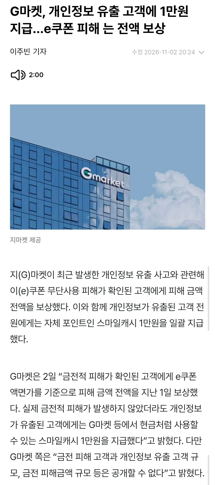

??? : 니 개인정보 1만원 먹고 꺼지삼, 이의제기 하지마

용진이형???

??? : 니 개인정보 1만원 먹고 꺼지삼, 이의제기 하지마
용진이형???
애초에 쿠팡도 흐지부지 됐잖어
지금 순서를 잘 정해야 함. 지금 보안이 털리는 이유는 우리나라에서 기존에 쓰던 보안 방식이 상당히 취약한게 이유라고 생각함. 정부는 빨리 한국 서버들 보안 강화를 시켜야 함. 기업들 혼내려다가 우리 정보 더털린다...
우리나라가 아니라 전세계가 다 털리는 중임. ai 발전으로 창의 발전이 너무 빨라졌으니
그리고 기업들 혼내면 우리 정보 왜 더 털림? 반대아니냐
아니 순서를 잘 잡아야한다고
기업들 먼저 혼내다가 보안 강화할 시기 놓친다는 의미로 쓴거고 봐주자는건 아님
뭔말인지는 이해했음. 닭이 먼저냐 달걀이 먼저냐인데
그냥 내로남불 하던거 쿠팡한테 제대로 물린거임 ㅋㅋ
똑같이는 시바 대가리 박고 잘못했다고 하는놈이랑 응 난 잘못없어 하면서 증거 폐기하는 놈이랑 같으면 그거도 문제임
진짜 한국정치권 새끼들 싹다 갈아버리고싶다. 똑같은 사건이 계속일어나는데 법을 만들 생각도안하네
이러고 액티브X를 다시 깔라고 하고, EXE 프로그램을 사용자 PC에 계속 깔아두라고 할걸.
자체적으로 보안 할 생각을 안함. 사용자 pc만 더러워지고, 마지막에 가서나 개인정보 털렸다고 사과문 올리지..
밑짤 뭐임 황금우상 시리즈 새로나왔네ㅋㅋ
???: 과거 반복적인 해킹으로인해 새로운 정보유출 우려없어 발언 논란
이미 뺏긴거다~ 이말이야!
이정도면 닳겠다 씨발ㅋㅋㅋㅋ
근데 이제 진짜 전세계적으로 AI발 해킹이 더 극심해질거라......빨리 대책......
존나게 털리다보니 만원이면 혜자로 느껴지네 ㅅㅂ ㅋㅋㅋㅋ
점마 뭐 알리랑 통합한다느니 헛소리하던거 어그러짐?
요즘 내가찾는건 지마켓에 해외 구매 대행밖에 없어서 그냥 알리나 네이버스토어만 쓰게됨 ㅋㅋ
용진이형 다라이 살벌하네 ㅋㅋㅋ
금융기관은 요새 좀 조용한거 같네
보안 강화한건지 아니면 쉬쉬하는건지...
농협: ........ㅎㅎㅎ
간단하게 말하면 우리가 아는 사이버 보안은 일차적으로 문이 열려 있음
열려있지 않으면 그 길로 데이터가 지나가지 못하거든 그래서 보안사들이 그걸 못찾게 가짜문을 만들거나 길을 복잡하게 만들거나 등등 해서 엄청 힘들게 찾게 만듬
근데 지금 AI 때문에 사람이 문을 일일히 찾을 필요 없어짐 그래서 보안이 뻥뻥 뚫리는거고 일개 지식도 없는 사람이 AI써서 기업 해킹 까지 가능하게 됨
이결 해결할 방법? 그건 똑똑한 사람들이 하겠지 뭐.. 못하면 우린 구멍 뚫린 배 위에서 서서히 침몰 하게 되는거고
만원 없는데? 그럼 난 유출안당한거야?
ㅇㅇ
지금 그냥 어쩔수가 없는거긴 해
딴나라도 똑같이 다 털리고 있고 막는건 ㅈ같이 힘들고
국민은 개돼지라 이래도 된다
니미시발
한국 개인정보는 뭐 그냥 걸레가 다됐네
귀에 보톡스임?
진짜 ai 해킹 대책 강구에 돈 존나 쏟아부어야 할듯.
그나마 아직 골든타임일거 같은데, 손놓고 어버버 하고 있다가 곧 진짜 지옥문 열릴거 같다.
이걸 정부에서 쿠팡하고 똑같이 대하지 않으면
쿠팡은 이런 자료 싹싹 긁어서 미국에 갖다줄거고
미국은 그거 빌미로 미국 기업 차별한다고 압박하고 투자든 이익이든 뭐든 뜯어내는 구조에서 벗어날 수 있나